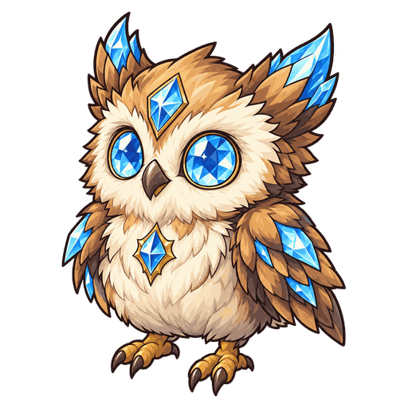

Aktif
Mata Batin
Memilih musuh dalam jarak 5 petak yang menerima kerusakan terbanyak dalam pertarungan ini. Menurunkan Pertahanan dan Ketahanan Sihir target sebesar 25% selama 4 detik, dan memberikan kerusakan sihir sebesar 510% Daya Sihir.

No.119
Memberikan kerusakan sihir kepada musuh yang menerima kerusakan terbanyak dan menurunkan Pertahanan serta Ketahanan Sihirnya, lalu meningkatkan kerusakan langsung skill aktif pertama yang memberikan kerusakan, baik milik dirinya maupun sekutu.
Aktif
Memilih musuh dalam jarak 5 petak yang menerima kerusakan terbanyak dalam pertarungan ini. Menurunkan Pertahanan dan Ketahanan Sihir target sebesar 25% selama 4 detik, dan memberikan kerusakan sihir sebesar 510% Daya Sihir.
Pasif
Meningkatkan kerusakan langsung skill aktif pertama yang memberikan kerusakan dalam pertarungan, baik milik diri sendiri maupun sekutu, sebesar 50%. Berlaku untuk seluruh kerusakan langsung area maupun beruntun, tetapi tidak untuk kerusakan berkala.
| Lv. | Darah | Daya Serang | Daya Sihir |
|---|---|---|---|
| 1 | 400 | 20 | 20 |
| 2 | 460 | 23 | 23 |
| 3 | 529 | 26 | 26 |
| 4 | 608 | 30 | 30 |
| 5 | 700 | 35 | 35 |
| 6 | 805 | 40 | 40 |
| 7 | 925 | 46 | 46 |
| 8 | 1064 | 53 | 53 |
| 9 | 1224 | 61 | 61 |
| 10 | 1407 | 70 | 70 |
| 11 | 1618 | 81 | 81 |
Darah, Daya Serang, dan Daya Sihir bertambah 15% setiap naik level (hingga Lv.11).